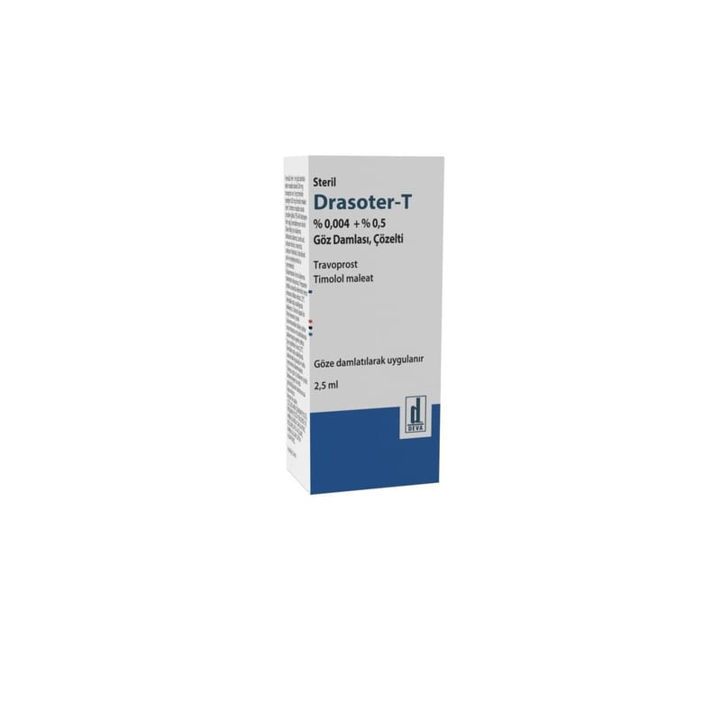

Drasoter-T %0.004 + %0.5 Göz Damlası, Çözelti, 1 Adet

Ne için kullanılır
KT · Bölüm 1DRASOTER-T, 2,5 mL’lik partikül içermeyen berrak ve renksiz çözelti içeren damlalıklı, şeffaf, düşük yoğunluklu polietilen şişe ve çevirmeli sarı polipropilen kapaktan oluşan ambalaj içerisinde bulunmakta, şişe soyulabilir saşe içerisinde sunulmaktadır.
DRASOTER-T, yetişkinlerde ve yaşlılarda göz içi yüksek basıncı tedavi etmek için kullanılır. Bu basınç glokom adı verilen bir hastalığa neden olabilir. DRASOTER-T, iki etkin madde (travoprost ve timolol) kombinasyonundan oluşan bir ilaçtır. Travoprost, sıvının akışını arttırarak göz içi basıncını azaltan bir prostaglandin analoğudur. Timolol, göz içinde sıvı oluşumunu azaltan bir beta blokerdir. Her iki madde beraber aktivite göstererek göz içindeki basıncı düşürürler.